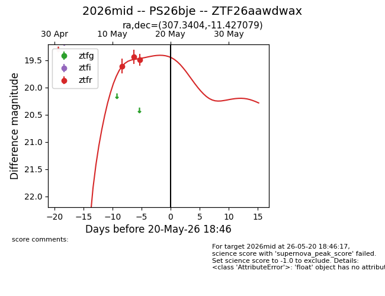
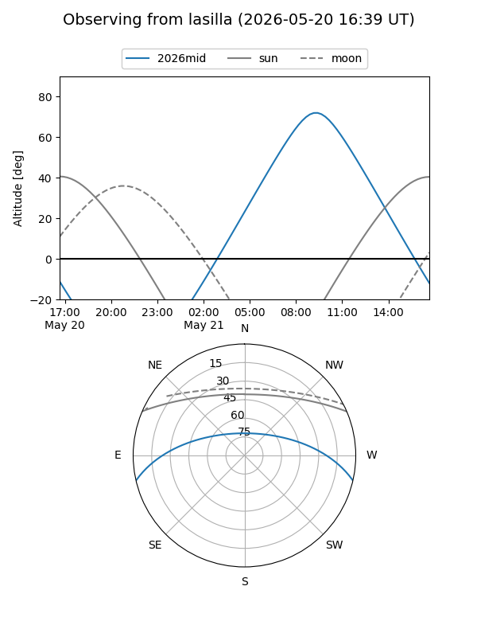
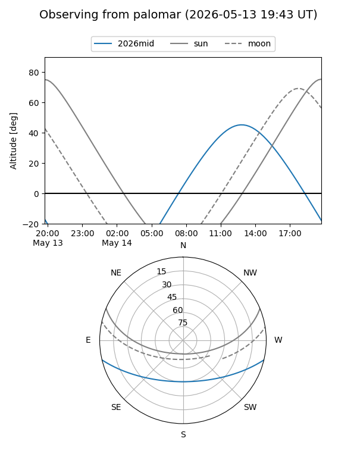
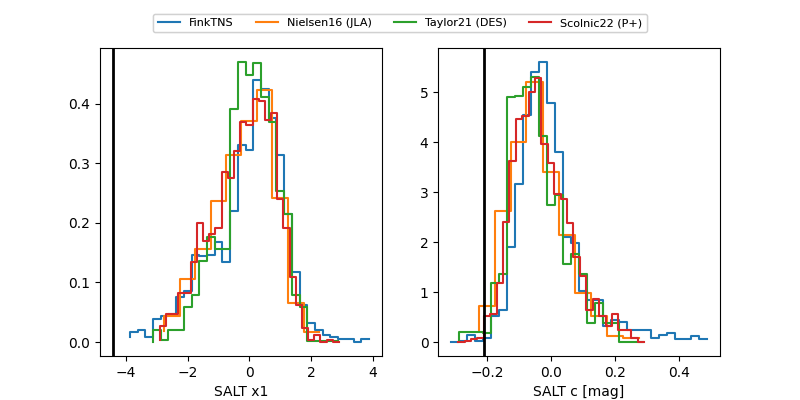

2026mid
Target 2026mid at 2026-05-20 18:53
Aliases and brokers:
FINK: link
Lasair: link
ALeRCE: link
TNS: link
YSE: link
alt names
ZTF26aawdwax (ztf,fink_ztf)
2026mid (tns,yse)
PS26bje (panstarrs)
Coordinates:
equatorial (ra, dec) = 307.3404,-11.42708
equatorial (HMS+DMS) = 20:29:21.69,-11:25:37.49
galactic (l, b) = (33.5026,-26.86125)
Flags:
Photometry:
last ztfr=19.49
3 ztfr detections
Lightcurve

Visibility


Additional plots
